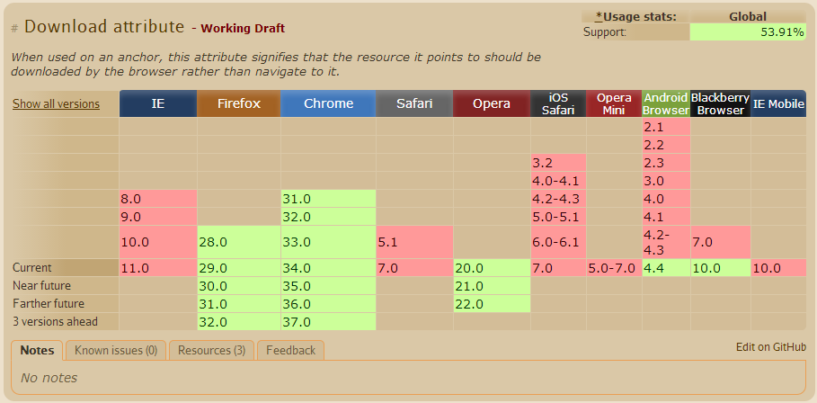

<a href="http://www.qq.com" download="newFileName">test download</a>
"A" element with download attr.(html)

IE不支持
当download值不带后缀时，Firefox不会自动补充后缀
<ol reversed>
<li>Coffee</li>
<li>Milk</li>
<li>Tea</li>
</ol>
IE不支持
<span hidden>hidden text</span>
这后面有字 --> hidden text <-- 这前面有字
IE不支持
与display:none语义上的差别
<a href="#" rel="noreferrer">content</a>
IE/Firefox不支持, Chrome/Opera支持